Module 1 — Measurement Fundamentals
Christian Medical College Vellore · Department of Bioengineering
August 1, 2026
Decisions for the individual patient rest on objective numbers.
Evidence-based medicine is the environment we work in.
Research and trials are distilled into objective decision rules — thresholds that say when to act.
But an evidence-based threshold is inert without a number from this patient.
Evidence sets the threshold. Measurement supplies the number. Together they help with the decision.
So a clinician must deal with a stream of numbers — each compared against the evidence.
Wherever care happens, something is being measured.
| Setting | What gets measured |
|---|---|
| Emergency & triage | Heart rate, blood pressure, SpO2, temperature, glucose |
| ICU monitoring | ECG, arterial pressure, capnography (CO2), respiration |
| Diagnosis | ECG, EEG, blood biochemistry, cell counts, structural and functional imaging |
| Surgery & anaesthesia | Depth of anaesthesia, end-tidal CO2, oxygenation |
| Rehabilitation | Gait analysis, joint range of motion, muscle force, movement quality |
In-class: a live SpO2 / ECG reading on the bench — the same numbers, in front of us.
Evidence-based thresholds, applied to the individual patient.
| Measurement | Decision | |
|---|---|---|
| SpO2 = 88% | → | Start supplemental O2 & investigate |
| Core temperature = 35.0 °C | → | Active warming |
| Blood glucose = 45 mg/dL | → | Immediate glucose administration |
| Gait speed = 0.8 m/s | → | Flag fall risk / frailty |
A wrong number can mean a wrong decision.
Sources: SpO2 — BTS oxygen guideline (O’Driscoll et al., Thorax 2017); temperature (Brown et al., NEJM 2012); glucose — ADA (Standards of Care 2026); gait speed (Studenski et al., JAMA 2011).
The course is organised around how each kind of number is obtained.
We focus on five types of biomedical variables:
1. How is this quantity actually measured?
2. How do we know we can trust the number? Is it accurate? Precise? Repeatable?
This module takes on question 2 — what makes a measurement trustworthy. The rest of the course takes on question 1 — one measurement problem at a time.
Turning a physical quantity into a number we can act on.
Measurement is the process of assigning numbers to physical, abstract, or logical characteristics of an entity by comparing them to a known standard.
\[\text{measurement} = \underbrace{\text{value}}_{\text{how many}} \times \underbrace{\text{unit}}_{\text{which standard}}\]
A measurement result carries:
The number is the end of this process — the objective quantity clinical decisions rest on.
What are we allowed to do with these numbers.
| Scale | What is meaningful | Clinical example | Permitted Operation |
|---|---|---|---|
| Nominal | labels only; no order | Blood type (A, B, AB, O) | Only evaluate equalities. \(x_1 = x_2\) or \(x_1 \neq x_2\) |
| Ordinal | ordered, gaps incomparable | mRS (0–6); Pain (0–10) | Only evaluate inequalities. \(x_1 > x_2\), \(y_1 = y_2\) |
| Interval | equal gaps; no true zero | Temperature in °C | All arithmetic operations only on differences. \(x_2 - x_1\) |
| Ratio | equal gaps and a true zero | Force, pressure, flow, temperature in °K | All arithmetic operations on the measurements directly. |
0°C does not mean “no temperature”; 0 N does mean “no force”. That is the interval/ratio distinction.
Physical measurands are almost all ratio (force, pressure, flow, current) or interval (°C). Clinical assessments are often ordinal (mRS, pain, MRC strength).
Match each measurement to its scale: nominal · ordinal · interval · ratio.
| Measurement | Scale? |
|---|---|
| Blood volume (\(m^3\)) | Ratio |
| Grades in TnI (\(A+, A, B, C, D, E, F\)) | Ordinal |
| Temperature (\(^{\circ}F\)) | Interval |
| Gender (\(M, F\)) | Nominal |
| Heart rate (\(bpm\)) | Ratio |
| HIV status (\(+ve, -ve\)) | Nominal |
| Age of a person (\(years\)) | Ratio |
| RGB colors (\(\#FE0034\)) | Nominal |
| Wavelength of light (\(m\)) | Ratio |
Click to reveal — then ask: what does that scale let you do with the number?
Every physical system has two things associated with it:
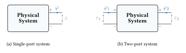
States are what we are primarily interested in measuring: voltage, charge, position, velocity, temperature, …
A system’s total energy and its states are deeply connected.
States
\(\longrightarrow\)
Information about system’s memory
\(\longrightarrow\)
Memory comes from energy storage elements
The states of a system are our primary measurement interest (mostly).
For an energetically closed system, its states can change even though its total energy remains the same:
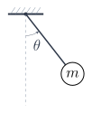
Pendulum (State: \(\theta,\ \dot\theta\))
\(E = \tfrac{1}{2}m\ell^2\dot\theta^2 + mg\ell(1{-}\cos\theta)\)
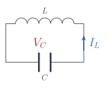
LC circuit (State: \(V_C,\ I_L\))
\(E = \tfrac{1}{2}CV_C^2 + \tfrac{1}{2}LI_L^2\)
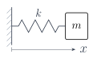
Mass–spring (State: \(x,\ \dot x\))
\(E = \tfrac{1}{2}m\dot x^2 + \tfrac{1}{2}kx^2\)
But for a system,
Rule: System state measurement must not disturb the total energy of the system!
One framework across every physical domain.
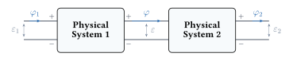
Connecting two systems makes energy exchange possible — whether it occurs depends on the mismatch between their port variables - effort \(\varepsilon\) and flow \(\varphi\).
The rate of energy transfer at the connection is:
\[ \text{power} = \frac{d E}{dt} = \text{effort} \times \text{flow} = \varepsilon \times \varphi \]
One framework across every physical domain.
Effort and flow at a port are determined by the system’s states — they are not themselves states, but they expose the states to the outside world.
Consequence: whenever \(\varepsilon \times \varphi \neq 0\) at a port, energy flows and the system’s states change.
One framework across every physical domain.
What are these effort and flow variables in different physical systems?
| Domain | Effort (\(\varepsilon\)) | Flow (\(\varphi\)) |
|---|---|---|
| Electrical | voltage (\(v\)) | current (\(\dot{q}\)) |
| Mechanical (translation) |
force (\(f\)) | velocity (\(\dot{x}\)) |
| Mechanical (rotation) |
torque (\(\tau\)) | angular velocity (\(\dot{\theta}\)) |
| Fluid | pressure (\(p\)) | volume flow rate (\(\dot{v}\)) |
| Thermal | temperature (\(T\)) | heat-flow rate \(\dot{q}\) |
(Thermal is the loose one — temperature × heat-flow is not literally power.)
The front door of every measurement.
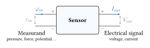
The electrical signal carries information about the measurand.
\[ \text{Electircal Signal} = \mathcal{F}\left( \text{Measurand} \right) \]
The spine of this whole course.
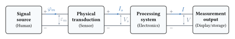
\[ V_s = \mathcal{F}\left( \varepsilon_m \right) \]
\(\mathcal{F}\) represents the physics of the sensor relating the measurandto its output voltage/current.
Not every source emits the signal on its own.
Usually the source emits the signal, and we transduce it directly. (ECG, body temperature.)
Sometimes we must probe the system — apply a known energy and transduce its response.
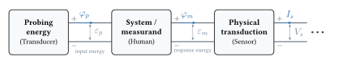
Examples: Ultrasound (echo), bioimpedance (inject current, read voltage), pulse oximetry, imaging — structural measurements often work this way.
Loading happens when physical system are connected together
Consider a sensor whose resistance \(R_s\) changes in response to compressive force \(f_m \geq 0\) applied on the sensor, with the following physics,
\[ R_s = \mathcal{F}\left( f_m \right) = 10 + 0.5 \cdot \sqrt{f_m} \,\,\, \Omega , \quad f_m \geq 0 \]
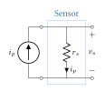
Loading happens when physical system are connected together
We connect a real voltmeter (input resistance \(r_{in}\)) to measure the voltage across the resister \(r_s\)
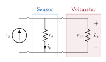
What is \(\hat{v}_s\)? \[\hat{v}_s = i_p \cdot \left( r_s || r_{in}\right) = v_s \cdot \frac{r_{in}}{r_s + r_{in}}\]
Real current sources, real wires, real voltmeters.
Assignment 1.1 — Real sensors have non-ideal sources and wires. Derive \(\hat{v}_s\) for the realistic circuit (finite \(r_p\), \(r_{w_1}\), \(r_{w_2}\), \(r_{in}\)). Understand the effect of the different resistances, show that the expresion reduces to the ideal case when the resistance have appropraite values.
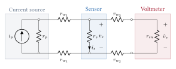
We have similiar loading effects in all other domains (e.g. mechanical, thermal, egc.). \(\implies\) We should be careful when connecting physical systems.
General input–output model.
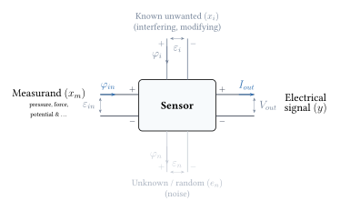
Each of these components will have an influence on the sesnor output \(y\), which can be represented as the following,
The general sensor output \(y\) is given by, \[ y = \mathcal{F}_m\left( x_m \right) + \mathcal{F}_i\left( x_i \right) + e_n\]
Sensor design tries to maximize \(\frac{\partial f}{\partial x}\), and minimize the \(\frac{\partial f}{\partial x}\) and \(e_n\).
Every sensor has dynamics — output lags, overshoots, or distorts fast inputs.
All sensors are non-linear, dynamical systems.
Every sensor has dynamics — output lags, overshoots, or distorts fast inputs.
General sensor behavior or characteristics can be divided into categories:
The knowledge of these three characteristics will inform whether thes sensor is suitable for an application.
Knowledge of the full functional form would provide complete characterization of the static and dynamic characteristics: \[ y(t) = \mathcal{F}_m\left( x_m(t) \right) + \mathcal{F}_i\left( x_i(t) \right) + e_n\]
We will need to identify these functions (at least \(\mathcal{F}\left(x_m\left(t\right)\right))\) in practice through a calibration procedure.
All measurements have errors
All measurements have error associated with them.
The appropriate interpretation of a measurement requires knowledge of the uncertainity associated with the measurement.
| Constant | Symbol | Value | Abs. uncertainty | Rel. uncertainty |
|---|---|---|---|---|
| Gravitational constant | \(G\) | \(6.674\,30 \times 10^{-11}\ \text{m}^3\text{kg}^{-1}\text{s}^{-2}\) | \(1.5 \times 10^{-15}\ \text{m}^3\text{kg}^{-1}\text{s}^{-2}\) | \(2.2 \times 10^{-5}\) |
| Proton mass | \(m_p\) | \(1.672\,621\,925\,95 \times 10^{-27}\ \text{kg}\) | \(5.2 \times 10^{-37}\ \text{kg}\) | \(3.1 \times 10^{-10}\) |
| Fine-structure constant | \(\alpha\) | \(7.297\,352\,5643 \times 10^{-3}\) | \(1.1 \times 10^{-12}\) | \(1.5 \times 10^{-10}\) |
| Rydberg constant | \(R_\infty\) | \(10{,}973{,}731.568\,157\ \text{m}^{-1}\) | \(1.2 \times 10^{-5}\ \text{m}^{-1}\) | \(1.1 \times 10^{-12}\) |
| Speed of light | \(c\) | \(299{,}792{,}458\ \text{m s}^{-1}\) | exact | exact |
| Planck constant | \(h\) | \(6.626\,070\,15 \times 10^{-34}\ \text{J s}\) | exact | exact |
| Boltzmann constant | \(k_B\) | \(1.380\,649 \times 10^{-23}\ \text{J K}^{-1}\) | exact | exact |
| Elementary charge | \(e\) | \(1.602\,176\,634 \times 10^{-19}\ \text{C}\) | exact | exact |
If all measurements have errors, how can we know some of them exactly?
All measurements have errors
All measurements have errors
Two important ideas are associated with measurements:
All measurements have errors
Accuracy and Precision naturally bring about two new concepts:
Random error: Contributes to the spread of the points — they tend to impact measurements both positively and negatively. \[ y_i = y_{true} + e_i \]
\(e_i\) is the random error; it is equally likely to be positive or negative.
Systematic error: Contributes to a consistent offset from the true value of the measurand. \[ y_i = y_{true} + y_{bias} \]
\(y_{bias}\) is the systematic error — a constant offset from the true value.
Overall, the total error in a measurement: \(y_i = y_{true} + y_{bias} + e_i\)
Random errors impair precision; systematic errors impair accuracy.
Statistical Analysis of Random Errors
A commonly employed model for random errors in sensor measurements is the Gaussian or the Normal distribution.
\[ f\left( x \right) = \frac{1}{\sigma \sqrt{2 \pi}} \exp \left( {-\frac{1}{2} \left( \frac{x - \mu}{\sigma} \right)^2} \right) \]
Statistical Analysis of Random Errors
\[ f\left( x \right) = \frac{1}{\sigma \sqrt{2 \pi}} \exp \left( {-\frac{1}{2} \left( \frac{x - \mu}{\sigma} \right)^2} \right) \]
Statistical Analysis of Random Errors
\[ f\left( x \right) = \frac{1}{\sigma \sqrt{2 \pi}} \exp \left( {-\frac{1}{2} \left( \frac{x - \mu}{\sigma} \right)^2} \right) \]
Let \(\left[ x_1, x_2, \ldots, x_N \right]\) be a set of \(N\) independent measurements of the same measurand. The sample mean \(\hat{\mu}\) and sample standard deviation \(\hat{\sigma}\) are given by, \[ \hat{\mu} = \frac{1}{N} \sum_{i=1}^N x_i \quad \quad \hat{\sigma} = \sqrt{ \frac{1}{N-1} \sum_{i=1}^N (x_i - \hat{\mu})^2 } \]
These estimates allow us to quantify the mean and variance of the parent distribution of the measurand.
Note, that the sample mean \(\hat{\mu}\) and sample standard deviation \(\hat{\sigma}\) are themselves random variables, and will vary with each set of \(N\) measurements.
Statistical Analysis of Random Errors
The estimates of \(\hat{\mu}\) and \(\hat{\sigma}\) are closer to the true values of \(\mu\) and \(\sigma\) as \(N\) increases.
Sampling distribution of the mean
The sample distribution of \(\hat{\mu}\) is also a Guassian distribution with the same mean \(\mu\) and a standard deviation of \(\frac{\sigma}{\sqrt{N}}\).
Statistical Analysis of Random Errors
Sampling distribution of the mean
Precision of the sample mean \(\hat{\mu}\) increases with \(N\). This is called the standard error, \(\alpha\), \[ \alpha = \frac{\hat{\sigma}}{\sqrt{N}} \]
From \(N\) measurements, the true mean lies in the range \(\hat{\mu} - \alpha < \mu < \hat{\mu} + \alpha\) with probability \(\approx 68\%\).
The error bar has its own error
Error in the Standard Error: \(\hat{\sigma}\) (and hence \(\alpha\)) is itself estimated from a finite sample — it too is a random variable. Its fractional error is,
\[\beta = \dfrac{1}{\sqrt{2(N-1)}} = \frac{\hat{\sigma} - \sigma}{\sigma}\]
The error bar has its own error
The error in the error bar shrinks slowly.
Move \(\mu\), \(\sigma\) — the shape is unchanged. Only \(N\) narrows the \(\pm\beta\) band. Reaching \(\beta \approx 1\%\) (a trustworthy second significant figure in the error) needs \(N \approx 10{,}000\).
This discussion is imporant to decide how to report a measurements - how many digits are meaningful in the reported value and its error.
Five repeat readings of grip force from a hand dynamometer (kg).
| Trial | Force (kg) |
|---|---|
| 1 | 24.11 |
| 2 | 23.63 |
| 3 | 24.81 |
| 4 | 23.97 |
| 5 | 24.33 |
Compute, then report:
How would you write down the final result?
Reporting grip strength measurements.
Discuss:
Six readings of a pressure sensor (mmHg). Compute \(\alpha\), then decide.
| Trial | \(p\) |
|---|---|
| 1 | 97.8 |
| 2 | 98.2 |
| 3 | 98.0 |
| 4 | 97.6 |
| 5 | 98.4 |
| 6 | 98.1 |
Five golden rules (Source: Hughes & Hase, Measurements and their Uncertainties)
Raw measurements are seldom directly reported
Raw voltage, current measurements from sensors are seldom directly reported.
The raw measured quantities \(x\) are transformed through a mathematical formula to obtain the desired measurand \(y\).
\[ y = f(x) \]
If \(x\) has an uncertainty \(\Delta x\), what is the uncertainty in \(y\)?
Let the measured value of \(x\) be \(\overline{x}\) with uncertainty \(\Delta x\), thus the measur will be,
\[ \begin{split} y &= f(\overline{x}) \\ y + \Delta y &= f(\overline{x} + \Delta x) \end{split} \implies \Delta y = f(\overline{x} + \Delta x) - f(\overline{x}) \]
For small \(\Delta x\), we can linearize \(f(\cdot)\) about \(\overline{x}\) to obtain the uncertainty in \(y\),
\[ \Delta y \approx \Big\vert \frac{df}{dx} \Big\vert \cdot \Delta x\]
Propagation through Multivariable functions
We often compute parameters of interest using multiple raw measurements, each with its own uncertainty. Let the measurand \(y\) be a function of \(n\) measured quantities \(x_1, x_2, \ldots, x_n\), each with uncertainty \(\Delta x_i\),
\[ y = f\left( x_1, x_2, \ldots, x_n \right) \]
The uncertainty in \(y\) is given by the root-sum-square of the individual uncertainties,
\[ \Delta y = \sqrt{ \sum_{i=1}^n \left( \frac{\partial f}{\partial x_i} \Delta x_i \right)^2 } \]
Ammuption: The uncertainties in \(x_i\) are mutually independent. If they are correlated, we need to account for them through the covariance terms.
Worked example — centre of pressure on a balance board
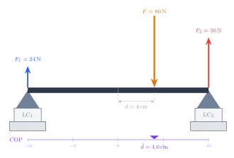
Two load cells read \(F_1, F_2\); the centre of pressure is
\[ F = F_1 + F_2 \quad \quad d = \frac{L}{2}\cdot\frac{F_2 - F_1}{F_1 + F_2} \]
Given the uncertainty in \(F_1\) and \(F_2\), what is the uncertainty in \(F\) and \(d\)?
\[ \Delta F = \sqrt{ (\Delta F_1)^2 + (\Delta F_2)^2 } \]
Uncertainty in \(F\) increases monotonically with that of \(F_1, F_2\).
The COP \(d\) is a more interesting case.
\[ \Delta d = \sqrt{ \left( \frac{\partial d}{\partial F_1} \Delta F_1 \right)^2 + \left( \frac{\partial d}{\partial F_2} \Delta F_2 \right)^2 } = \frac{2 L}{(F_1 + F_2)^2} \sqrt{ F_2^2\,(\Delta F_1)^2 + F_1^2\,(\Delta F_2)^2 } \]
For fixed reading error \(\Delta F_i\), \(\Delta d \propto 1/(F_1+F_2)^2\) — as the total load shrinks, the error in \(d\) blows up.
Watch the COP error grow as the total load drops
Response of a sensor to fixed inputs measurands
When performing static calibration, we must ensure that the sensor’s transient die out before reading the sensor output \(y_i\) for the input \(x_{m_i}\).
Response of a sensor to fixed inputs measurands
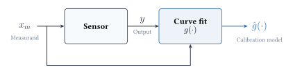
Static Calibration Data
| Measurand (\(x_m\)) | Sensor Output (\(y\)) |
|---|---|
| \(x_1\) | \(y_1\) |
| \(x_2\) | \(y_2\) |
| \(x_3\) | \(y_3\) |
| \(\vdots\) | \(\vdots\) |
| \(x_N\) | \(y_N\) |
We fit this data to a function \(g(x_m)\) to build the static input-output model of the sensor.
\[ \hat{g}\left(x_m\right) = \arg \min_{g\left(x_m\right)} \Vert y - g\left( x \right)\Vert_2^2\]
We usually employ a least squares fitting procedure to identify the function \(g(x_m)\) or its parameters.
Polynomial models can generally be employed for capturing smooth non-linearities. \[ g(x) = \sum_{i=0}^m \beta_i \cdot x^i \]
Fit a model to the calibration data to obtain \(\hat{g}(\cdot)\), then inspect the residuals.
We define the mismatch between measured value and the model prediction as the residual \(r\),
\[ r_j = y_j - \hat{g}\left(x_{m_j}\right) \]
Using the static calibration fucntion \(\hat{g}\left(\cdot\right)\)
Once the function \(\hat{g}\left(\cdot\right)\) is esitmated, we can use it to estimate the measurand from the measurement: \(\hat{x}_m = \hat{g}^{-1}\left(y\right)\)
Some sensors have hysteresis, making it difficult to use them.
Some sensors have hysteresis, which is the difference in measurements for the exact same input measurand, depending on whether the input is increasing or decreasing.
Identifying the dynamic characteristics of the sensor
Clinical motivation: A sidestream capnograph designed for adults has a long sampling tube and large analyser chamber — together these create a large time constant τ. A neonate breathes at 50–60 breaths/min (one breath every ~1 s). If an adult sampling line is used, the CO₂ waveform is smeared beyond recognition and ETCO₂ reads near zero — not because the sensor is broken, but because its dynamics are too slow for the signal. (numbers to be updated after reading the papers)
Static characteristics:
When the measurand varies with time, the sensor dynamics cannot be ignored!
In general, sensor dynamics can be represented as a nonlinear differential equation.
For a linear time invariant (LTI) sensor, the differential equation becomes a linear constant coefficient one.
Identifying the dynamic characteristics of the sensor
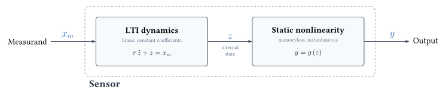
The capnographic sensor difference understanding using the above model
Identifying the dynamic characteristics of the sensor
Identifying the dynamic characteristics of the sensor
Bandwidth of the singal is commonly used to capture the idea of how quickly a signal varies.
\[\text{Higher Bandwidth} \iff \text{Faster signal variation}\]
Bandwidth of the sensor tells the fastest signal that the sensor can track.
\[\text{Higher Bandwidth} \iff \text{Tracks faster signal variation}\]
For measuring time varying measurands, we must ennsure: \[\text{Sensor Bandwidth} > \text{Signal bandwidth}\]
Identifying the dynamic characteristics of the sensor
Capnograph example: If we know \(\tau\), we can verify that the sensor’s bandwidth exceeds the signal’s bandwidth — and choose or reject equipment accordingly.
For LTI sensors, there are several ways dynamic characterization can be done. All these methods follow the same common template:
Dynamic characterization is more involved than static calibration.
Dynamic characterization of non-linear systems is more difficult than for LTI sensors, and we will need to make assumptions about the functional form of the non-linearities.